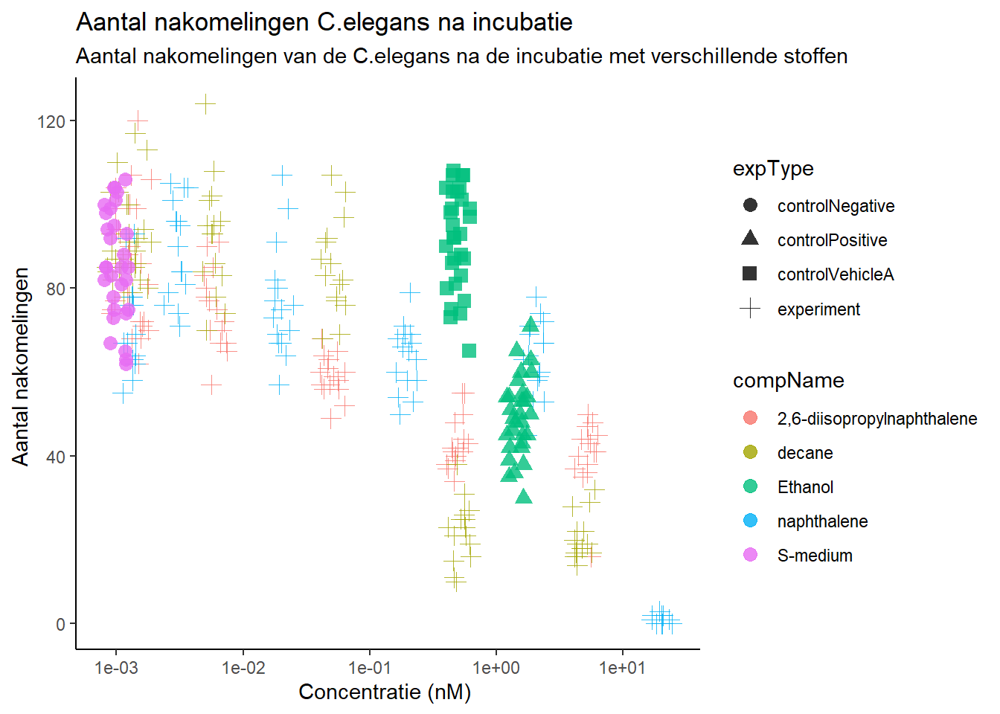
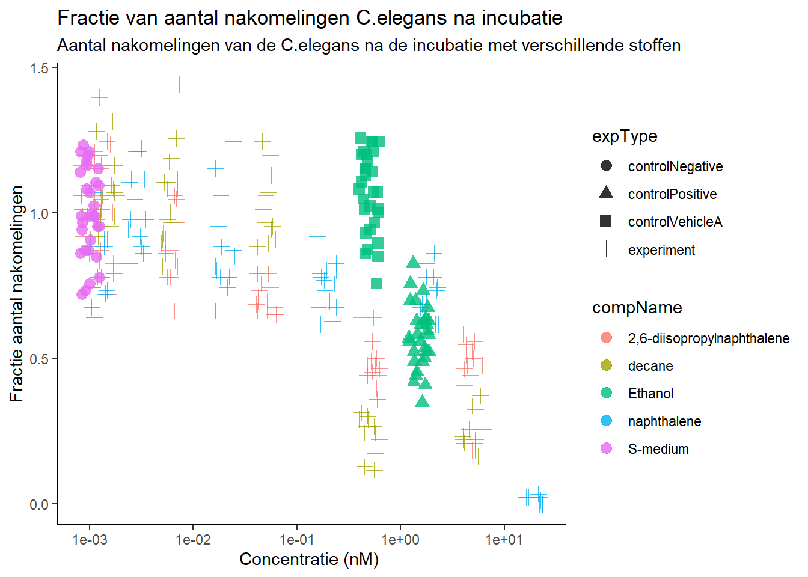

5 C.elegans plate experiment
In het experiment wat gebruikt wordt voor deze opdracht zijn C.elegans nematoden bloodgesteld aan verschillende concentraties van verschillende stoffen. Het doel van het experiment is om te kijken wat het effect van de bepaalde stof is op het aantal nakomelingen van de C.elegans. Het aantal nakomelingen werden geteld en is dus de data waar we naar gaan kijken. De data uit het experiment wordt in deze opdracht geanalyseerd.
Het experiment is uitgevoerd door J. Louter (INT/ILC)
De data die relevant is voor de uitwerking zijn:
De ruwe data, “RawData”
Naam van de stof, “compName”
Concentratie van de stof, “compConcentration”
De eerste stap van de analyse is om het verkregen Excel door R te laten inlezen.
Celegans_dataset <- read_excel(here::here("data-raw", "Data010", "CE.LIQ.FLOW.062_Tidydata.xlsx"), sheet = 1)Na het inlezen van de data wordt de data gecontroleerd op het type.
Er zijn een paar data type die veranderd moeten worden. De ruwe data is als double maar moet een integer worden aangezien het hele getallen zijn. De concentratie is als character weergeven maar moet als numeric omdat het decimalen heeft. Als laatst moet de naam van de stof worden veranderd naar een factor omdat het categorische data is.
#RawData veranderen van dbl naar int
Celegans_dataset$RawData <- as.integer(Celegans_dataset$RawData)
#compName veranderen van character naar factor
Celegans_dataset$compName <- as.factor(Celegans_dataset$compName)
#compConcentration veranderen van character naar numeric
Celegans_dataset$compConcentration <- as.numeric(Celegans_dataset$compConcentration)
#Verwijder NA waarden
Celegans_dataset_no.na <- Celegans_dataset %>% filter(!is.na(RawData))Na het veranderen van de data wordt de data tegen elkaar uitgezet in een grafiek.
#Om ervoor te zorgen dat de dataset niet door 0 heen gaat voor de output van de grafiek
Celegans_dataset_no.na$compConcentration_offset <- Celegans_dataset_no.na$compConcentration + 0.001
#Plot met de aangepaste C.elegans data met het gebruik van geom jitter
Celegans_plot <- ggplot(data = Celegans_dataset_no.na, aes(x = compConcentration_offset, y = RawData)) +
geom_jitter(aes(color = compName, shape = expType), size = 3, alpha = 0.8, width = 0.1, height = 0) +
scale_x_continuous(trans = "log10", breaks = c(0.001, 0.01, 0.1, 1, 10)) +
labs(title = "Aantal nakomelingen C.elegans na incubatie",
subtitle = "Aantal nakomelingen van de C.elegans na de incubatie met verschillende stoffen",
y = "Aantal nakomelingen ",
x = "Concentratie (nM) ") +
theme_classic()
Celegans_plot
Uit de bovenstaande grafiek is te zien dat de positieve controle voor het experiment Ethanol is en de negatieve controle S-medium. Dit kan ook gechekct worden met de volgende code:
#Check wat de negatieve controle is voor het experiment
Celegans_dataset_no.na %>% filter(expType == "controlNegative") %>% select(compName) %>% slice(1)## # A tibble: 1 × 1
## compName
## <fct>
## 1 S-medium#check wat de positieve controle is voor het experiment
Celegans_dataset_no.na %>% filter(expType == "controlPositive") %>% select(compName) %>% slice(1)## # A tibble: 1 × 1
## compName
## <fct>
## 1 EthanolOm de data verder te analyseren en om een conclusie te kunnen trekken moeten er nog een paar stappen gebeuren:
Om de verschillende stoffen met elkaar te vergelijken en om te weten of er een significant verschil is wordt er een ANOVA test gedaan.
Voordat de test gedaan word wordt eerst de data geplot in een bargraph met de standaardvariatie erbij om alvast een beeld te krijgen over de data.
Daarna wordt de data gecontroleerd op normaliteit doormiddel van een Shapiro-Wilk test.
Als de data normaal verdeeld is kan er een ANOVA test worden uitgevoerd
Als er een significant verschil is ine en groep wordt er een Post hoc test uitgevoerd om te kijken over welke stof het gaat.
Normalisatie: Als laatste stap wordt de data genormaliseerd op een manier waardoor de negatieve controle gelijk is aan 1 en de rest wordt uitgedrukt als een fractie daarvan. Dit wordt gedaan zodat de data makkelijker kan worden vergeleken met de negatieve controle om een verschil te zien in de grafiek.
Eerst wordt de data veranderd zodat de negatieve controle gelijk is aan 1 en de ander data een fractie daarvan.
#Berekenen van het gemiddelde van de negatieve controle
Celegans_negative <- Celegans_dataset_no.na %>%
filter(expType == "controlNegative")
mean_control_negative <- mean(Celegans_negative$RawData)
#Gemiddelde van de negatieve controle is 85.9
Celegans_dataset_norm <- Celegans_dataset_no.na
#Zorg ervoor dat de data 1 is door alle waarden door het gemiddelde te delen
Celegans_dataset_norm$RawData <- (Celegans_dataset_norm$RawData / mean_control_negative)Daarna wordt er een grafiek gemaakt van de genormaliseerde data.
Celegans_dataset_norm$compConcentration_offset <- Celegans_dataset_norm$compConcentration + 0.001
Celegans_plot_normalized <- ggplot(data = Celegans_dataset_norm, aes(x = compConcentration_offset, y = RawData)) +
geom_jitter(aes(color = compName, shape = expType), size = 3, alpha = 0.8, width = 0.1, height = 0) +
scale_x_continuous(trans = "log10", breaks = c(0.001, 0.01, 0.1, 1, 10)) +
labs(title = "Fractie van aantal nakomelingen C.elegans na incubatie",
subtitle = "Aantal nakomelingen van de C.elegans na de incubatie met verschillende stoffen",
y = "Fractie aantal nakomelingen",
x = "Concentratie (nM) ") +
theme_classic()
Celegans_plot_normalized